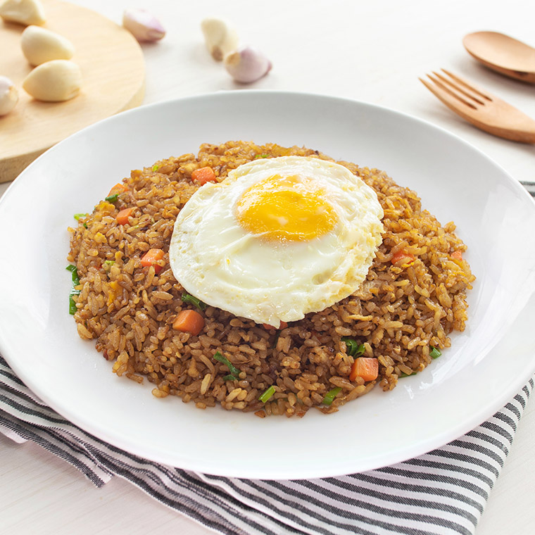

Nasi goreng merupakan makanan yang sudah sangat umum ditemui oleh mahasiswa
baik di warung, kantin, burjo, dan sebagainya. Terdapat varian harga yang
berbeda juga, mulai dari yang harga elit sampai yang cocok untuk yang kantongnya
sulit. Namun, untuk anak kos yang elit ekonomi sulit seperti saya,
alangkah baiknya kalau saya tidak melulu beli di burjo, namun juga mencoba membuat
sendiri. Baiklah, tanpa berlama-lama, mari kita gasskeun
Alat yang diperlukan :
Sementara untuk bahannya, adalah sebagai berikut :
Cara membuatnya :
Begitulah cara membuat nasi goreng, mungkin tidak seenak buatan ibu, tapi
rasanya cukup enak untuk dimakan sendiri, dan kalau untuk menghemat pengeluaran,
bisa banget lah. Semoga tulisan ini bermanfaat, adios...